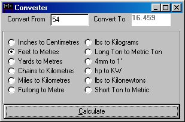
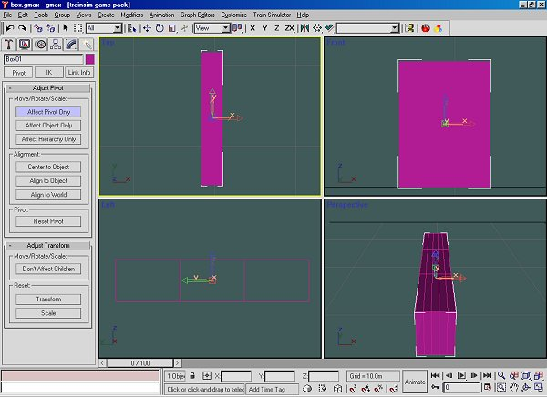
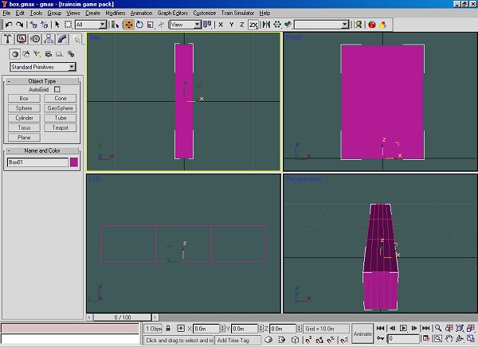
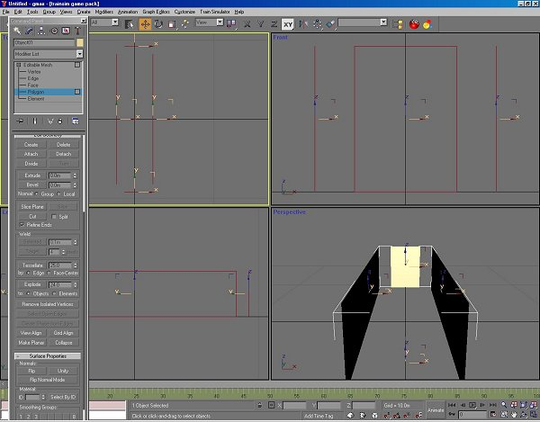

A Coach Made With GMax
by Richard Osborne
Chapter 2: Getting Started
I'm going to build some coaches from the London & North Western Railway; this ran from London to the Scottish Border, actually to Carlisle & was known as the West Coast Route. These coaches would have been pulled by the Webb locomotives I've built. The plans I have were published in a model railway magazine many years ago. This is one of the problems, most of the plans published for the era which most interests me are from the 1970s. I've scanned them as .jpg files.
Gmax on my computer runs on c: drive; on another drive I have a 'projects' directory. This has folders within it:- turbocad, gmax, photos etc. These have further subdirectories:- wagons, T9, 0415 - all names I understand & which will be unique for that project. The full path for this project is:-
n:\projects\gmax\lnwrcoach\50brk_n.gmax.
Gmax needs specific paths for plug-ins, autosave & projects. Under 'Preferences' look at the 'Paths' panel.
Gmax claims to be able to use background images - forget it!! This is one area where TSM is far better. Instead we'll use what flightsimmers call a calibration box.
You could use Imperial measurement & let Gmax do the conversions. I wouldn't recommend it; it's far simpler to accept that most plans are Imperial, convert to Metric & keep total control. Our plan gives the size as 54' long, 8' 6" wide & 11' 10" high; using our converter that's 16.46, 2.59, 3.61. Most plans have no more than a dozen critical measurements, use the converter & write down the metric figures.

We need to make a box to those overall dimensions. There are 2 ways of making a box, by keyboard input & by eye. (The diesel tutorial on this site explains keyboard entries well). We'll use the visual method as I can explain some of the manipulation tricks as we go. Obviously we start with a blank screen which will show a grid far bigger than we need. By default 4 screens will show with the aspect in the top left. The side panel will be showing primitive shapes - press 'box'. On the left or right screen drag the mouse to produce a box shape; you'll see the dimensions changing on the side panel. The third dimension is produced by dragging the mouse without the left button pressed, then press the left button to fix the size.
Experiment with F2, F3 & F4; they change from solid view, wireframe & solid with polys showing. The box is going to be huge, the initial grid is +/- 200m. Press the buttons next to the dimensions, you'll see the difference on the screen. Press the 'Length Segs' button, in wireframe you'll see that the box is divided. You'll also see that length, width & height aren't what you'd expect - weirdness #1. Drag across the dimension & write in the figures we need; like 'Turbocad' & other programs click the neighbouring window to make the change. We should have a box looking like a shoe box & to the right size. When you come out of the initial screen you will no longer see these windows - the program is ready for the next primitive. Press the 'Modify' button which has a quarter ring in a box.

The cluster of icons bottom right affect the screen sizes, press the one which has a box & grid to show all panels to maximum size. I suggest you save the project, it will have autosaved already if you've set it.
Now to manipulate the box. First we need to centre it; find the hierarchy icon on the side panel which has a box with three small boxes under it. Press ' Affect Pivot Only' the pivot icon will change - then 'Center to Object'. Click the 'Modify' button again. Press the 'Select & Move' icon, the three bottom windows will show the X, Y & Z axes. Set the X & Y axes to 0, this will set the box to the grid datum. By default the box sits on the grid; you've just moved the axis from 0 to the centre of the box - you need to set it back to 0. Press the 'Affect Pivot Only' icon, then the 'Select & Move' icon & set the Z axis to 0, click on the neighbouring window only the pivot will move. Bring the 'Segs' back to 1.

I've found it better to set the box away from the model so we need to split it. First we need to make it amenable to change; right click on the word 'box' on the side panel or right click on the screen, press 'Convert to Editable Mesh'. You'll see on the side panel icons & a drop-down which allows you to choose vertex, polygon & other modes. Like TSM you'll find that 90% of modelling is in point mode.
Press 'polygon'; we want to delete a couple of polys & split others. On the top view drag the mouse inside the box, you'll see 4 polygons selected. If you press F2 you'll also see the picked polygons bright red. Press 'delete' on the side panel; if it shows a panel 'Delete Isolated Vertexes' press 'Yes'. We now want to be able to split the box; drag the mouse across the side panels, again 4 polygons are selected - 4 polygons means 4 triangles from 2 rectangles. This time press 'Detach'; a screen appears with 'Object01' as a title - press 'Yes'.
If you press keyboard H you'll see box01 & Object01 listed. Cancel - you're only being inquisitive. 'Box01' should still be active, if not put the mouse over it, you'll see a cross, left click. Still in 'polygon' mode pick one end. On the top toolbar press the 'Select and Move' icon with 4 small arrows. You'll see on the bottom line windows for X, Y & Z axes, press the arrows by the sides - you'll see the polygons move 1m for each click. This is the default which can be changed. Move back & front 1m outwards. Make 'Object01' active & move the sides out by 1m. We need to recombine the 2 objects. Make 1 active & press the 'Modify' icon on the side panel - under 'Edit Geometry' you'll see 'Attach List', press, choose the other part then press 'Attach'. Change the object name in the window to 'Calibration' or something you'll remember. Press the small colour panel & change the colour. Each new part in Gmax arrives in a random colour.
The next thing to change is the box itself; we want our image on the inside of the box such that the model is in front of the image on the box. In 'Polygon' mode drag over the whole part - you could also 'Select All' under 'Edit'. Scroll the side panel until 'Surface Properties' appears; press 'Flip' to invert all polygons. Just below this you'll see smoothing & 'Autosmooth' which we'll be using later. The box is ready for texturing. With practice this whole operation can be done in a couple of minutes.

?I'm assuming here this is all new - with more experience you won't need such detailed instructions. As usual keep practicing.